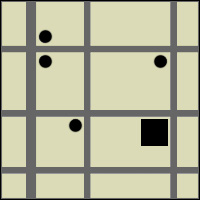

Welcome to Onkar Vader's Profile
Mailing Address
78, Romaine Avenue
Apartment 7
Jersey City, NJ 07306
Contact Me
(201)-895-3064
email address

Driving Directions
-
Get on I-280
E from Sussex
Ave and Nesbitt
St
-
Follow I-280
E and Newark-Jersey
City Turnpike toHudson
County
-
Take Newark
Ave and Garrison
Ave to Romaine
Ave